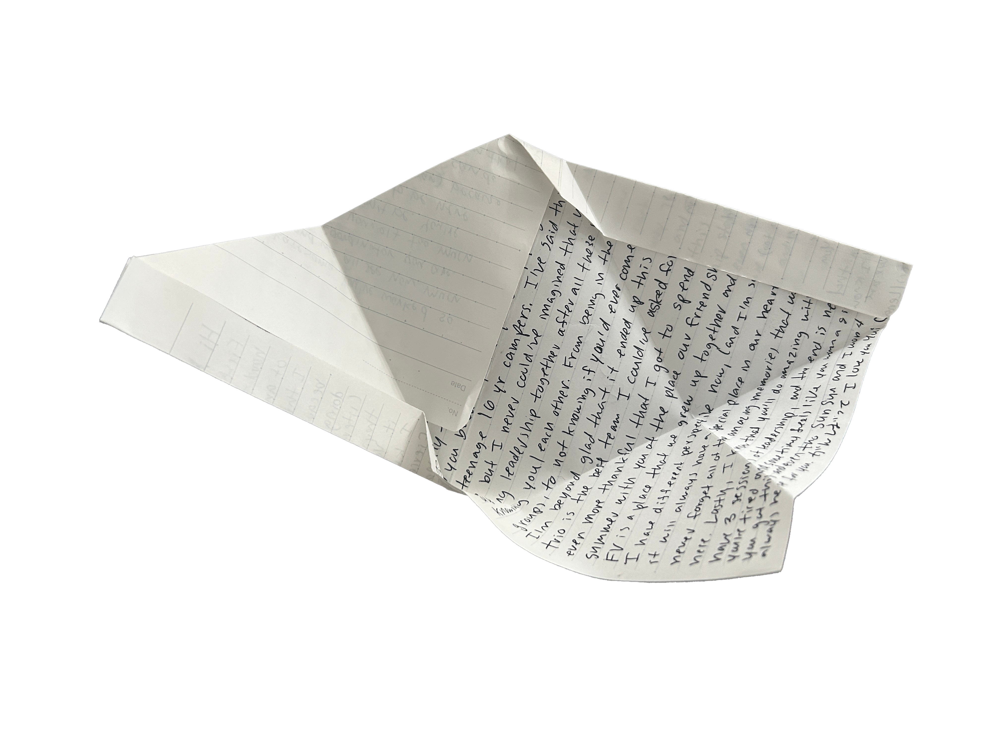

lets open it...
what does it say?
Let’s start with the most recent letter. Over the summer, I was quite literally stuck in the mountains for two months straight. I worked at a Japanese summer camp in Upstate New York. An extremely unique place, I got to work alongside with one of my childhood friends. The letter I got from her was heartfelt as I received it on the day she left. The summer was tough and honestly speaking I don't remember much of it becuase of how tired I became in the end. But the letter I got from her is a reminder that at the same time, I spent a long summer growing as a person alongside her.
She was a friend that has stayed through every phase of my childhood. From when we were little girls prancing around rooms and running through the hallways. She was a companion and coworker throughout my time at a japanese summer camp in upstate new york. I looked forward to seeing her every summer, excited to see what memories we could make. But soon we went from being campers to counselors to coordinators. Fulfilling responsibilities and becoming leaders that we were once so in awe of. we have seen each other laugh, make stupid mistakes, make tough decisions and cry over immense stress. She is the sole reason why i went through this summer with unforgettable memories.
私の子ども時代のあらゆる時期を共に過ごしてくれた友達。 小さな女の子だった頃、一緒に部屋を駆け回ったり、廊下を走ったりしていた。 彼女は、ニューヨーク州北部にある日本のサマーキャンプでの私の仲間であり、同僚でもあった。 毎年夏に彼女に会えるのを楽しみにしていて、「今年はどんな思い出ができるかな」とワクワクしていた。 やがて私たちは、キャンパーからカウンセラー、そしてコーディネーターへと成長し、責任を果たしながら、かつて憧れていたリーダーの姿に近づいていった。 笑い合い、バカな失敗をし、難しい決断を下し、そして大きなストレスに押しつぶされて泣いたこともあった。 この夏を忘れられない思い出にできたのは、間違いなく彼女のおかげだ。
and click here for the next letter!